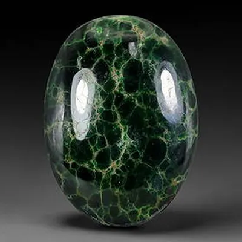

賭石：一刀窮一刀富的風險美學
一刀窮、一刀富——賭石是翡翠世界最刺激的遊戲，也是風險與資訊不對稱的極致。

核心定義
賭石（原石交易）是翡翠產業鏈的開端：緬甸礦區出產的原石包著風化外殼（皮殼），內部品質不可見——買家依皮殼特徵、打燈表現與經驗估價下注，開切後「一刀窮、一刀富」。
風險階梯：蒙頭料（全包皮殼、風險最高）→ 開窗料（擦開小口見色、風險中）→ 半明料（切開一面、風險較低）→ 明料（去皮見全貌、風險最低）。風險越高，潛在溢價越大。
特徵與分類
| 料型 | 可見度 | 風險 |
|---|---|---|
| 蒙頭料 | 完全不可見 | 最高 |
| 開窗料 | 見一小口 | 高 |
| 半明料 | 見一面 | 中 |
| 明料 | 全貌可見 | 低 |
賭石看三件事：皮殼（沙粒粗細、鬆緊——暗示內部結構）、打燈（透光見水頭與色根）、蟒帶與松花（皮殼上的綠色跡象）。但這些都只是「暗示」——內部裂紋、變種（種水突變）、色根深淺，開切前誰也說不準。
科學原理
賭石的科學是「地質痕跡學」：皮殼是風化殘留物，其特徵與內部礦物組成相關——沙細皮殼暗示內部結晶細（種好），松花是鉻的氧化痕跡（可能見綠）。但風化過程會扭曲訊號，裂紋與變種更是隱藏變數。
為什麼會「一刀窮」？因為內部可能：裂紋密布（料碎）、種水突變（變種）、色根斷裂（色淺）——皮殼的暗示是統計性的，不是確定性的。賭石的數學期望，長期是負的。
鑑定與鑑別方法
- 看皮殼：沙粒粗細、鬆緊、油性
- 打燈：透光看水頭、色根
- 找松花與蟒帶：綠的跡象
- 評估裂紋風險（皮殼裂紋會深入）
- 謹記：賭石是風險投資，非穩賺
市場行情與保養建議
市場現況：賭石是緬甸公盤與雲南瑞麗市場的核心交易形式——蒙頭料一夜暴富的傳說與傾家蕩產的現實並存。近年直播賭石興起，也帶來大量糾紛與造假（如做假皮、注色）。
理性提醒：賭石是「資訊不對稱的負和遊戲」——賣家比買家懂料，長期玩必輸。收藏級玩家多買明料或成品；賭石的「樂趣」，應以可承受損失為限。
常見誤區
賭石是資訊不對稱的遊戲：賣家掌握更多產地與料性資訊。長期統計上，買家期望值為負——暴富是傳說，虧損是常態。
打燈見綠可能只是「色根」淺層——切開後色可能斷、變種可能現。燈光下的綠，是最會騙人的綠。
冷知識
緬甸的翡翠公盤（拍賣）是全球原石交易的中心——大料在公盤上以億計價，開切的瞬間，命運翻轉。
做假皮（貼皮）、注色（染色後再封皮）、移花接木——賭石市場的騙術與賭術同步進化，驗明正身是進場前提。
反直覺觀點
真正的高手深知資訊不對稱——他們用明料規避風險、用賭石只投「可承受的樂趣」。賭石的美學，高手玩的是機率，新手玩的是運氣。
同樣一塊原石，賣家看過產地、懂料性，買家只看到皮殼——價差裡裝的全是資訊差。資訊不對稱，就是賭石的利潤與風險。